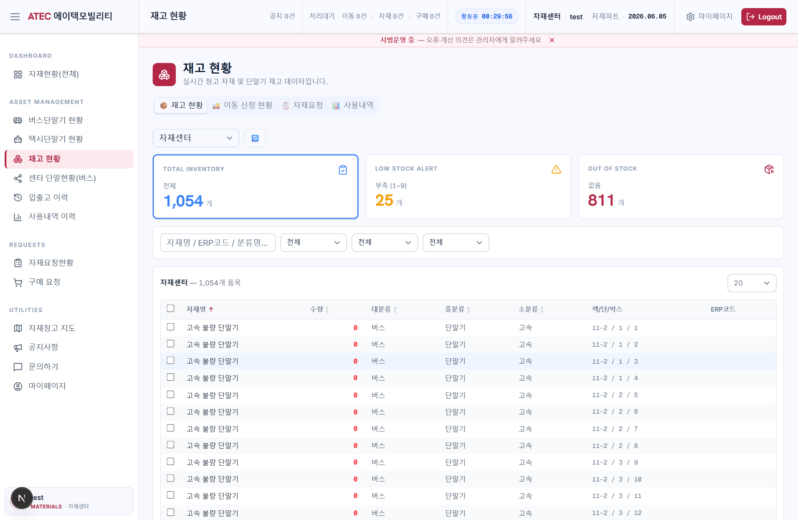
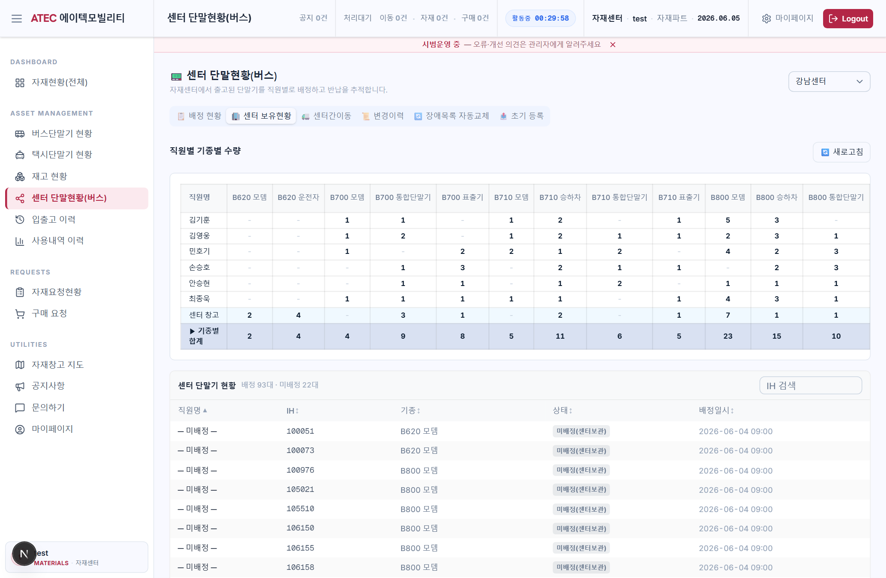
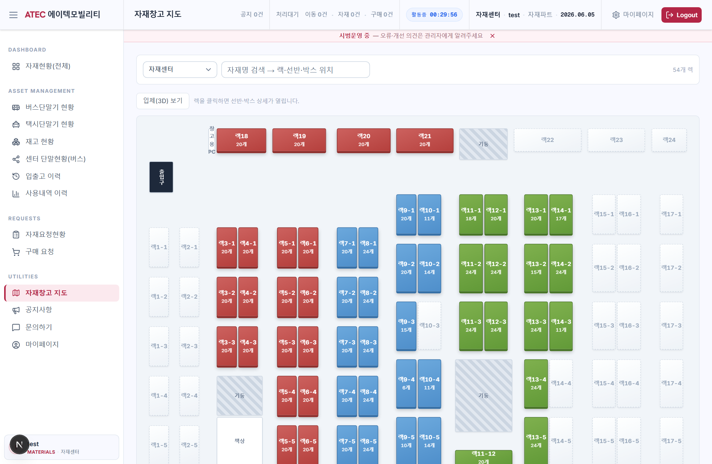
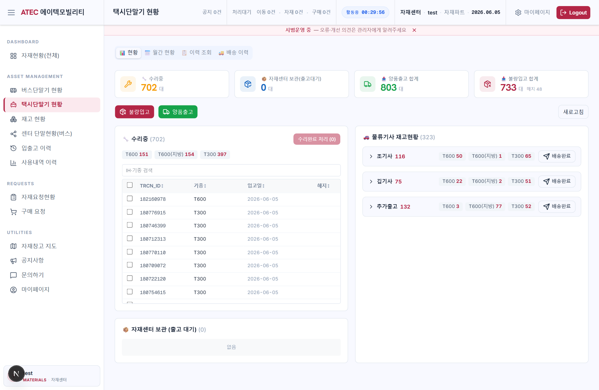
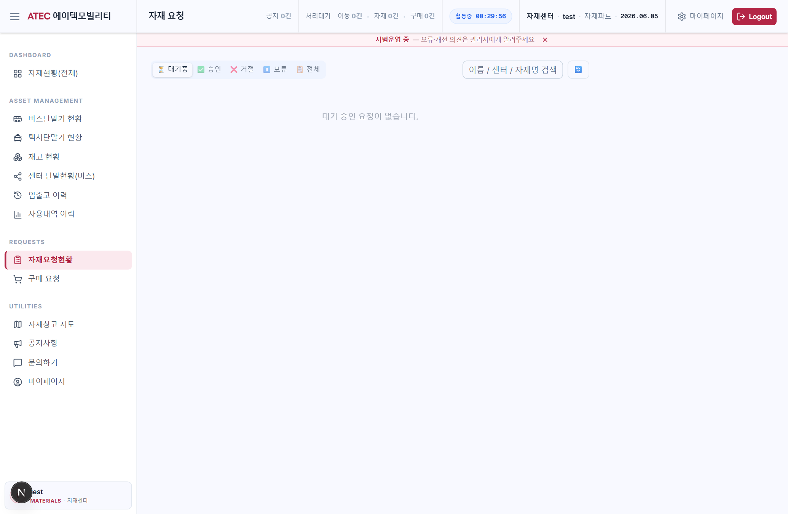
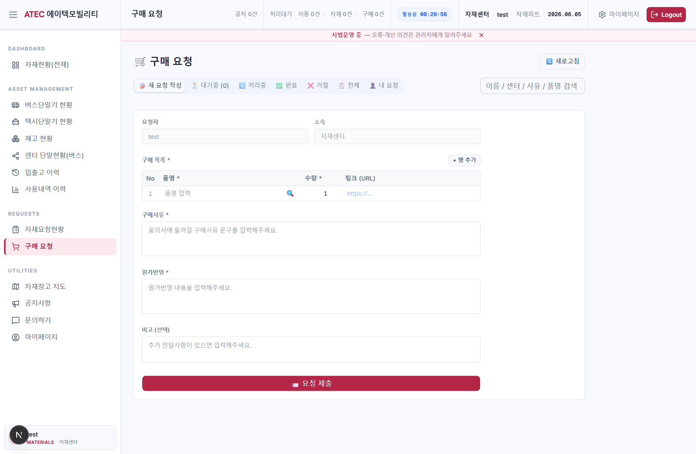
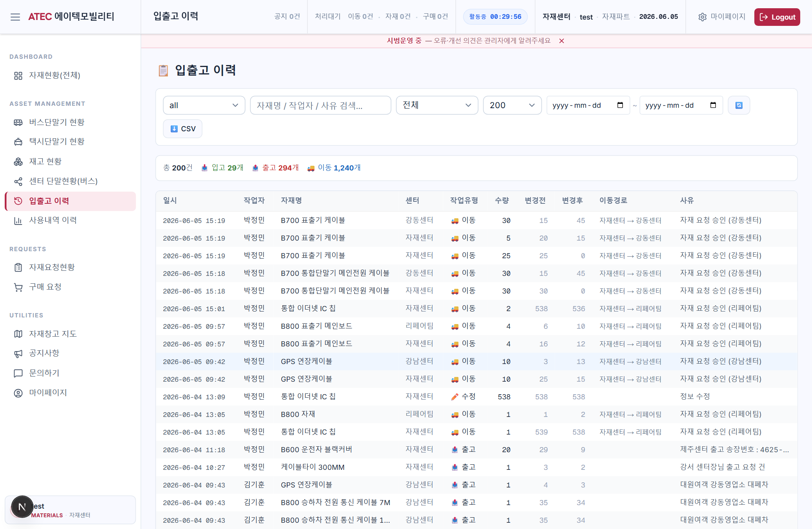
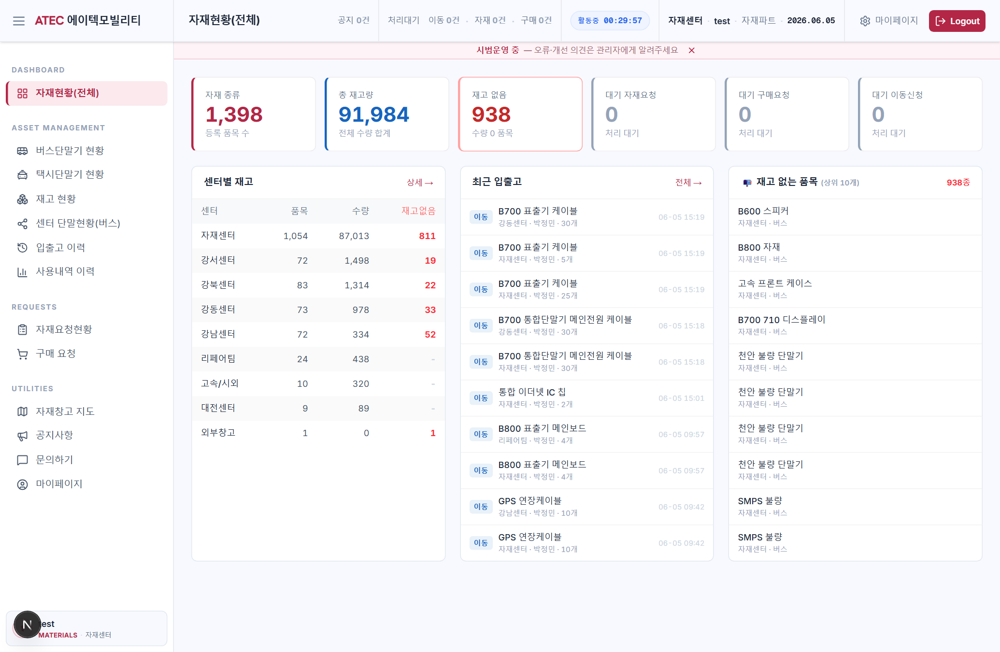

센터별 자재 재고와 버스·택시 티머니 단말기의 흐름을 한 곳에서 실시간으로 관리하는 통합 웹 애플리케이션. 기존 엑셀·수기 관리와 구(舊) Streamlit 도구를 대체합니다.
자재센터와 각 운영센터(강서·강북·강동·강남 등)에 흩어진 재고와 단말기 정보를, 사람마다 다른 엑셀 파일과 구두 보고로 관리하면서 다음과 같은 문제가 반복되었습니다.
핵심 도메인별 구현 현황입니다. 운영중
대시보드(센터별 재고·통계·재고없음 알림), 재고현황(필터·페이지네이션), 입·출고 처리, 입출고 이력, 사용내역(CSV 업로드 자동 차감), 자재센터 3D 약도(렉/박스 위치).
자재요청(타센터→자재센터, 박스별 차감 배분), 구매요청(네이버 쇼핑 검색 연동·엑셀 양식), 센터간 이동신청 — 각각 승인/거절/보류 처리.
센터 단말현황 6탭: 배정현황 · 센터보유현황 · 센터간이동 · 변경이력 · 장애목록 자동교체 · 초기등록. 자재센터 출고가 센터 보유풀로 자동 연동, 완전초기화 지원.
티머니 택시 단말 현황(이동/배송 상태 자동 계산), 버스·택시 박스 단말기(IH·기종) 입력 및 재고현황·약도 공용 표시.
Gmail 기반 브랜드 이메일(요청·승인·이동·문의·가입), 웹 푸시(VAPID) 이벤트별 발송, 탑바 처리대기·공지 배지.
PWA 홈화면 설치, 모바일 반응형(사이드바 드로어·압축 탑바), iron-session 8시간 + 세션 잔여시간 표시.
회원가입 승인제, 5단계 역할(admin·materials·manager·user·guest), 유저/역할/센터 관리, 접속현황, 공지, 문의.
Supabase 단일 DB(자재·이력·요청·단말기 테이블), 모든 입출고·이동·교체가 스냅샷과 함께 이력 테이블에 자동 기록.
실제 운영 화면 캡처입니다. (테스트 계정 · 2026-06-05 기준)








모든 센터의 재고와 단말기 상태를 한 시스템에서 즉시 확인 → 센터별 엑셀 취합·대조 작업 제거.
입출고·이동·교체·반납이 처리자·시각·수량 스냅샷과 함께 자동 이력화 → 분실/오차 원인 추적과 감사 대응 용이.
장애목록 엑셀 업로드 → 보유자 자동 매칭·교체, 박스별 자동 분배 차감 등으로 수작업·반복 입력 최소화.
요청-승인 단계마다 이메일·푸시 자동 발송 → 구두 누락·승인 지연 방지, 책임 소재 명확화.
PWA·모바일 대응으로 창고·현장에서 단말기 배정/반납을 즉시 처리, 사무실 복귀 후 입력 관행 해소.
공용 컴포넌트·이메일 템플릿 헬퍼·역할 기반 권한 구조로 신규 센터·단말 라인·요청유형 추가가 수월.
현재 운영에는 지장이 없으나, 신뢰성·보안·완성도를 높이기 위해 보완이 필요한 항목입니다.
| 항목 | 내용 | 우선순위 |
|---|---|---|
| 재고 부족 부분이행 처리 | 자재요청 승인 시 재고가 모자라도 "있는 만큼만 차감"되고 부족분이 기록·통지되지 않음. 부분승인 상태·실이전 수량 명시·백오더(잔량) 관리 필요. | 높음 |
| DB 보안(RLS·키 분리) | 서버가 Supabase anon 키 단일로 접근하고 행수준 보안(RLS)이 비활성. 서비스 역할 분리 및 테이블별 RLS 정책 적용으로 보안 강화 필요. | 높음 |
| 동시성·재고 정합성 | 차감·이동이 다중 사용자 동시 처리 시 경합 가능. 트랜잭션/원자적 차감(DB 함수) 또는 낙관적 잠금 도입 검토. | 중간 |
| 자동화 테스트 | 유닛/통합 테스트와 CI 부재. 핵심 로직(차감 배분·단말 상태계산·완전초기화)에 회귀 테스트 도입 필요. | 중간 |
| 데이터 표준화 | 센터명 문자열 직접 비교, KST 보정을 +9h 라벨 트릭으로 처리하는 등 관례적 처리 정리. 코드/날짜 표준화로 버그 여지 축소. | 중간 |
| 권한 세분화·감사 로그 | 역할 5단계 외 세부 액션 권한, 민감 작업(삭제·완전초기화) 감사 로그·이중확인 강화. | 낮음 |
| 대용량·오프라인 성능 | 대량 엑셀 업로드/조회 시 페이지네이션·서버 집계 최적화, 일부 오프라인 캐싱 검토. | 낮음 |
| 운영 환경 점검 | 이메일·푸시는 환경변수(Gmail 자격, VAPID 키) 의존 → 배포 환경 누락 시 알림 미발송. 배포 체크리스트·헬스체크 필요. | 낮음 |